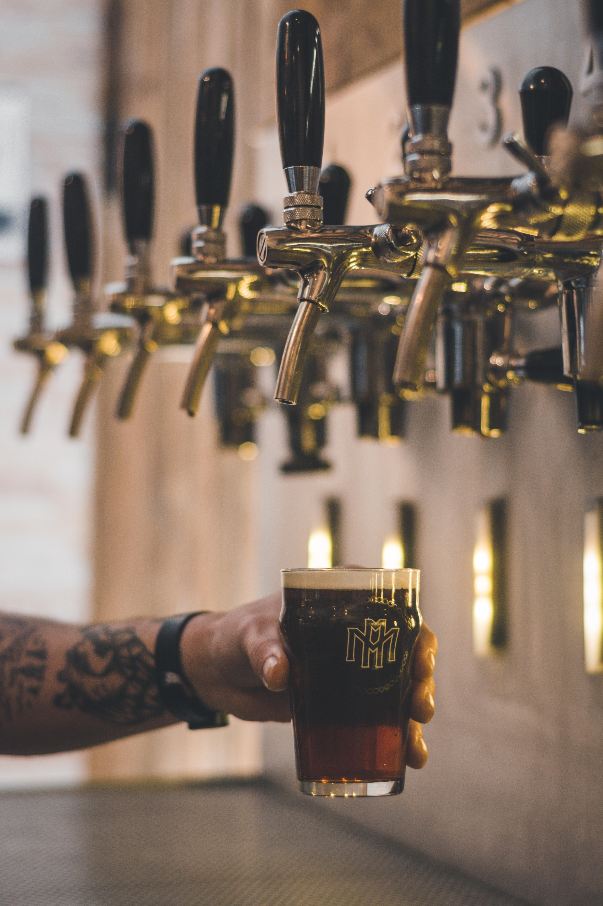
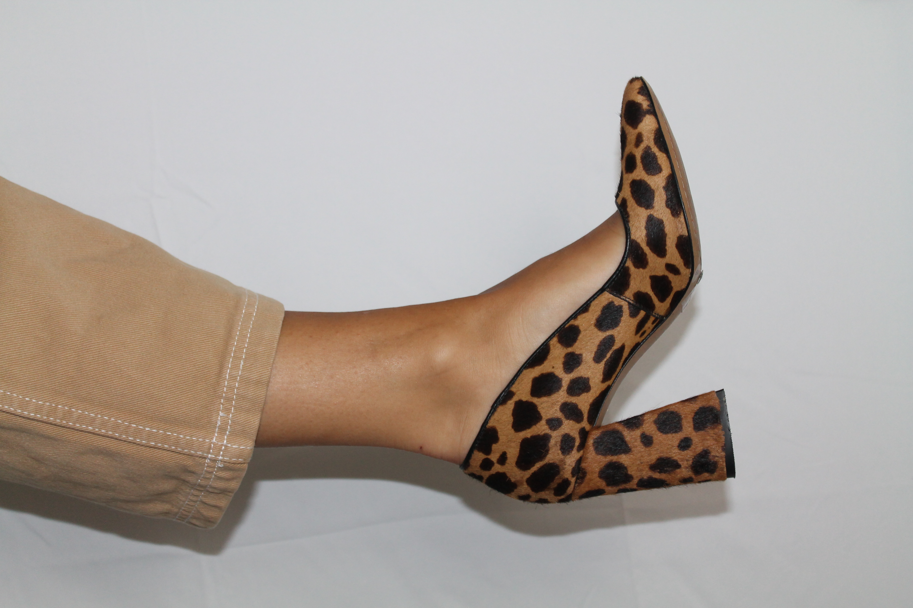
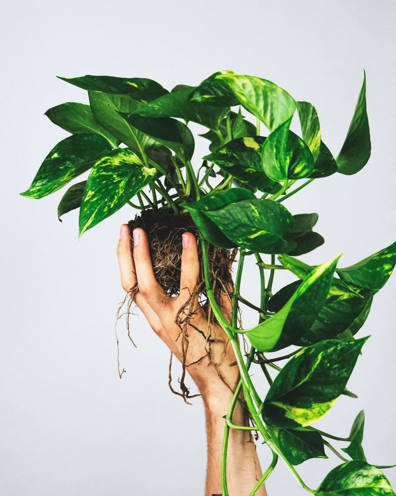
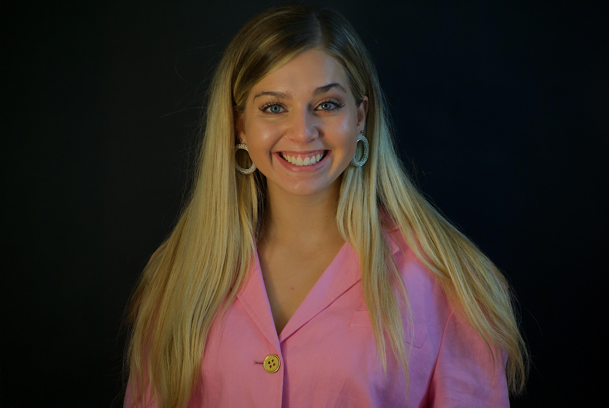

<!DOCTYPE html>
<html lang="en">
<head>
    <meta charset="UTF-8">
    <meta http-equiv="X-UA-Compatible" content="IE=edge">
    <meta name="viewport" content="width=device-width, initial-scale=1.0">
    <title>My Portfolio</title>
</head>
</html>
<html>
    <head>
        <title>Get to Know Me</title>
        <link rel="stylesheet" href="css/main.css">
    </head>
    <body>
        <nav>
            <uls>
                <li>Get to Know Me! </li>
                <li><a href = " https://pollyannabrewing.com/pages/roselare" >Pollyanna Brewing</a> </li>
                <li><a href = "https://ableshoppe.com/" >Able Shoppe</a></a></li>
                <li><a href="https://toogoodtogo.com/en-us/movement" >Too Good to Go </a> </li>
                <li><a href= "https://adamsfriendship.com/" >Friendship, Wi </a> </li>

            </uls>
        </nav>
        <div class="hero-image"> 
            <div class="hero-text">
                <h1 style = "font-size:50px;">Alexa Pedersen</h1> 
                <h2> My hobbies + passions + why I did coding temple: </h2>
            </div>
            </div>
            <main>
                <div id = "main" >
                    <article class = "main-articles">
                        <h1>Hobby #1  Craft Beer </h1>
                        
                        <li><a href = " https://pollyannabrewing.com/pages/roselare" >Pollyanna Brewing</a> </li>
                        <br>
                        <strong><small> <en>My passion for craft beer began when I started working at my family friend's brewery called Pollyanna Brewing. </en> </small></strong>
                        <p> When Covid first started, I was a little bit dissapointed to be working a serving job in my hometown while many of my friends were moving to new cities. I knew nothing about craft beer, and every single person there was ten years older than me. I really didn't think that I would fit in or enjoy the job; but what started off as a chore, soon turned into an exciting passion, along with a whole new crew of life-long friends. I loved learning about craft beer and how the process of 'brewing beer' actually worked. I was really facinated with the whole entire brewing process: how combining ingredients, relying on chemistry, and having a lot of patience all have to come together in order to produce a quality beer. Well, that and having a great server like me. Ha! One of my dreams is to start my own brewery when I'm older, but for now im very content staying involved and connected at Pollyanna. The link is attached above if you'd like to check it out the website.  </p>
                    </article>
                    <article class=" main-article">
                        <h1>Hobby #2 Modern Vintage </h1>
                        <figure>
                            
                            <figcaption><em>This is a photo I styled</em></figcaption>
                        </figure>
                        <li><a href = "https://ableshoppe.com/" >Able Shoppe</a></a></li>
                        <br>
                        <strong><small> <en>I've always loved thrifting, but my love for thrifting turned into a hobby when I started working with my friend Liv who opened a small vintage store called Able Shoppe in my hometown. Click on the website if you'd like to check it out!  </en> </small></strong>
                        <p>I have always loved bringing old things to life; turning old wood into shelves, reframing prints that had been thrown away, etc. I didn't really use that skill until I started working at Able Shoppe. I absolutely love working at the shop, and doing all of the behind the scenes work that it takes to run a small business. I had NO CLUE how much time, effort, and energy went into starting a business until I started helping Liv. Managing inventory online, sourcing, managing social media, shipping are just a handful of the tasks that go into making Able Shoppe as sucessful as it is. After seeing all of the work that Liv does day in and day out, I'm not too keen on owning my own vintage shop, but I love the community and hope to always stay involved. </p>
                    </article>
                    <article class = "main-articles">
                        <h1>Hobby #3 Sustainability </h1>
                        
                        <br>
                        <li><a href="https://toogoodtogo.com/en-us/movement" >Too Good to Go </a> </li>
                        <br>
                        <strong><small> <en>I am very passionate about reversing climate change. </en></small></strong>
                        <p>I am always trying to minimize waste, along with my carbon footprint. I compost, try to walk or take public transportation whenever I can, I'm mostly vegan - I say 'mostly' because sometimes I just can't resist a bite of delicious cheese. I was really overjoyed to get a job out of college working for a really cool European food-waste company. This company stops restaurants from throwing away food at the end of the night, which prevents food from going into a landfill and releasing methane. The restaurants are able to sell that leftover food to customers on an app for a discounted price. Working for Too Good to Go really opened my eyes to how precious and valuable our food is. At the end of the day, I always want to be mindful of what I'm doing for the earth. Check out their website to learn more about the mission! </p>
                    </article>
                    <article class = "main-articles">
                        <h1>Why do I want to be a programer? </h1>
                        <li><a href= "https://adamsfriendship.com/" >Friendship, Wi </a> </li>
                        <br>
                        <strong><small> Remote Work </small></strong>
                        <p>My grandparents have a house in the northern woods of Wisconsin. They bought a property in a very small town called Adams before I was born, and I have enjoyed this beautiful home my entire life. While I love Chicago, it is nice to have a get-away place where I can appreciate nature and breathe some fresh air. I have spent many weekends of my life there, and have considered it 'my favorite place' since I was a child. There are many reasons why I want to become a programer, but a huge perk for me is working remotely. I want to be around to help my grandparents as they get older and need helping hands to take care of the property. Maybe I'd even make a new website for the town of Adams, looks like they desperately need one!  </p>
                    </article>
                </div>
                <div id= "profile details">
                    <article class=" side-article" id="profile">
                        
                        <br>
                        <br>
                        <h2>Alexa Pedersen</h2>
                            <ul>
                                <li>57 W Ave</li>
                                <li>Chicago, Il</li>
                                <li>847-937-8366</li>
                                <li><a href= "mailto: alexa@gmail.com">alexa@gmail.com</a></li>
                            </ul>

                    </article>
                    <article>
                        <p>
                            Have similar hobbies and interests? I am always looking to grow my network and make connections with other people. 
                        </p>
                    </article>
                    <article >
                        <h1> Let's get in touch!</h1>
                        <strong><small>Contact Me</small></strong>
                        <br>
                        <form action="mailto:alexa@gmail.com" method="POST">
                        <label for="name"><strong> Name</strong></label>
                        <br>
                        <input type = "text" id="name" placeholder="Your Name">
                        <br>
                        <label for="body"><strong> Message</strong></label>
                        <br>
                        <textarea id="body" placeholder="Your Message" rows="5"></textarea>
                        <br>
                        <button type= "submit">Submit</button>
                        <br>
                        </form>
                    
    
                    </article>
                </div>
                <div class="footer-image"> 
                    
                    <br>
                    <h1>Nice to Meet You!</h1>
                    <br>
                    <br>
                </div>

            </main>
            <footer>
                <hr>
                <div>
                    &copy Alexa Pedersen 2021; &NonBreakingSpace;
                </div>
            </footer>
            <hr>
            <div>

        </div>
    </body>
</html>